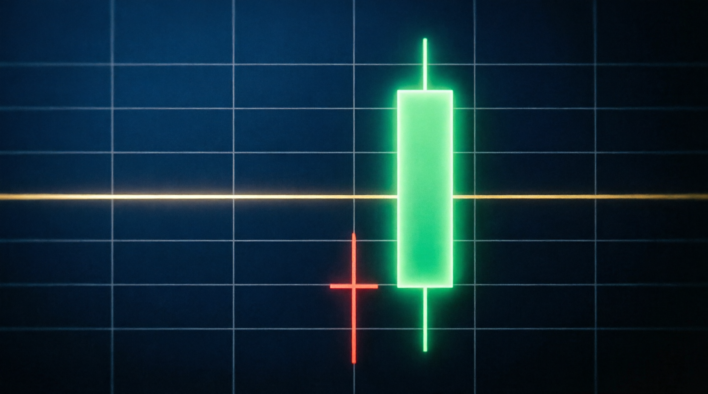

🎯 ورود: بعد از کلوزِ کندل صعودیِ بعدی
🛡️ استاپ: کمی پایینتر از کفِ سایهٔ چکش
🏆 تارگت: نزدیکترین سقف قبلی (نقدینگی) یا ۲R

بذارید رک بگم: کندل فقط یک شکل روی چارت نیست؛ ردِ پایِ جنگِ خریدار و فروشنده است. هر کندل ۴ قیمت دارد و اگر بلد باشید بخوانیدشان، میفهمید کدام طرفِ بازار برنده شده و پول هوشمند کجا نشسته است.
بدنه = فاصلهٔ باز تا بسته (قدرت برنده) | سایه (Wick) = جاهایی که یک طرف شکار شد. در LIT سایهٔ بلند یعنی تله!
حالا قسمت جذاب ماجرا: برای هر کندلِ مهم، دقیقاً میگویم کجا وارد شوید، استاپ کجا، تارگت کجا. ولی یادتان نرود: هیچ کندلی بهتنهایی سیگنال نیست؛ اول زمینه (ساختار + تله) بعد کندل!
بدنهٔ کوچک بالا + سایهٔ پایینی بلند (حداقل ۲ برابر بدنه). در کفِ روند نزولی یا روی یک تله/حمایت یعنی فروشندگان شکار شدند.
آینهٔ چکش: سایهٔ بالایی بلند در سقف روند صعودی. خریداران بالا رفتند و برگشت خوردند — تلهٔ کلاسیک.
یک کندل سبز که بدنهاش کندل قرمزِ قبلی را کامل میبلعد — یعنی خریداران یکباره کنترل را گرفتند. (تصویر پایین همین صفحه!)
کندل قرمزی که بدنهٔ سبز قبلی را میبلعد — در سقف یا ناحیهٔ پرمیوم، یعنی پول هوشمند در حال خروج است.
سایهٔ بسیار بلند و بدنهٔ کوچک — دقیقاً همان Smart Money Trap: قیمت به نقدینگی نفوذ کرد و ریجکت شد.
باز ≈ بسته؛ یعنی جنگ مساوی شد. بهتنهایی ورود نکنید؛ دوجی روی سقف/کف + تأییدِ کندل بعد = هشدارِ بازگشت.
بدنهٔ بزرگ بدون سایه — حرکتِ شارپِ الگوریتمی (EPA). دنبال ورود مستقیم نباشید؛ منتظر پولبک به ۵۰٪ بدنه بمانید.
کندلی که جریان سفارش الگوریتمی میسازد و باعث EPA میشود — بانیِ حرکت. در متد سایکل ۹۰ دقیقه، سفارش اصلی در سقف سایکل نشسته است.

🌊 اینگالف صعودی: کندل سبزِ درخشان، کندل قرمز را کامل میبلعد — تغییرِ قدرتِ آشکار